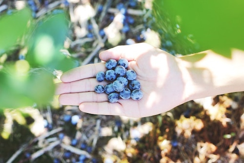
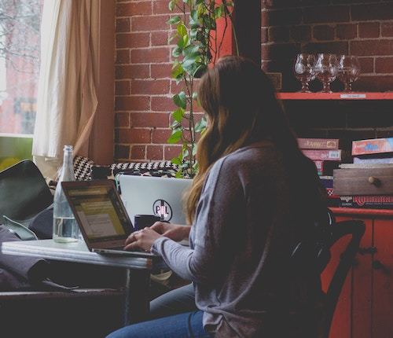

our story

In 2009, Jane & John decided it was high time that local farmers collaborate with restaurant owners here in Vancouver to provide locally-sourced goods. Café Beany works in conjunction with FairTrade Canada to provide you with the most ethical and humbly sourced coffee, while our menu changes seasonally in order to reflect products readily available to us by our partners. Keep an eye out for our changing menu!
the team
Jane Smith
Cafe Beany Owner. Supply & order. Community manager. Barista. Dog lover.

John Doe
Cafe Beany Owner. Restaurant management. Crew supervisor. Salad maker. Cat lover.